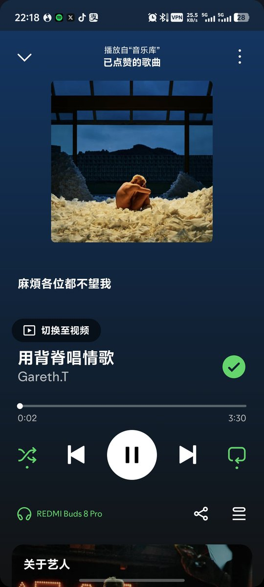
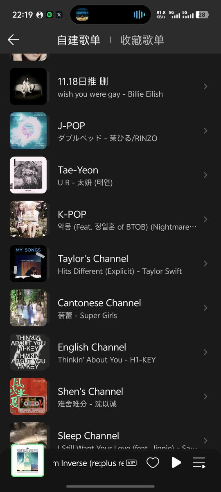

淩晨說晚安^
@LengChamSayBye
@woodiebug713 哎哎粤语也好听，这个是我最近收藏的一首，啊啊啊我和你差不多，我歌单都整整齐齐的划分好什么语言


貍貓ウッデイー🇭🇰
@woodiebug713
@LengChamSayBye 不多 我最主要聽的都是廣東話歌和日本歌
外國的基本都是聽很出名的
英文歌的話最主要也是偏抒情的
Blue /Golden hour /Her /From the start /Die for you(joji) /642 way /Novocaine /Fouth of July / Yesterday once more /u and i /Ojos Tristes /Obsessed 之類的吧
短時間只能夠想到這些